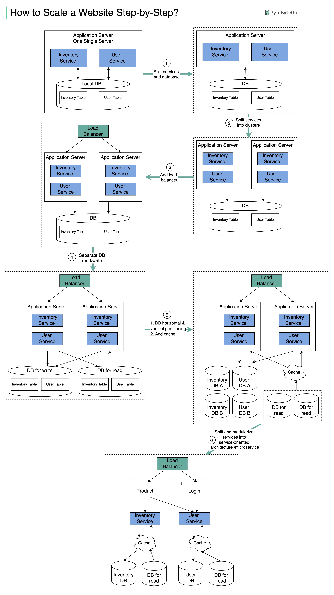

The diagram below illustrates the evolution of a simplified eCommerce website. It goes from a monolithic design on one single server, to a service-oriented/microservice architecture.
Suppose we have two services: inventory service (handles product descriptions and inventory management) and user service (handles user information, registration, login, etc.).
With the growth of the user base, one single application server cannot handle the traffic anymore. We put the application server and the database server into two separate servers.
The business continues to grow, and a single application server is no longer enough. So we deploy a cluster of application servers.
Now the incoming requests have to be routed to multiple application servers, how can we ensure each application server gets an even load? The load balancer handles this nicely.
With the business continuing to grow, the database might become the bottleneck. To mitigate this, we separate reads and writes in a way that frequent read queries go to read replicas. With this setup, the throughput for the database writes can be greatly increased.
Suppose the business continues to grow. One single database cannot handle the load on both the inventory table and user table. We have a few options:
Now we can modularize the functions into different services. The architecture becomes service-oriented / microservice.